Team briefing · October 2026
Real, personalised letters from history's great minds, posted to children across the UK. When a child writes back, the next letter answers them.
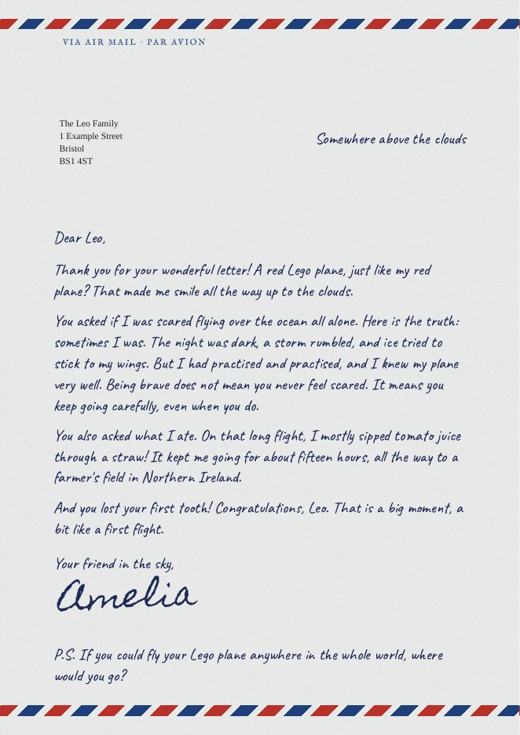
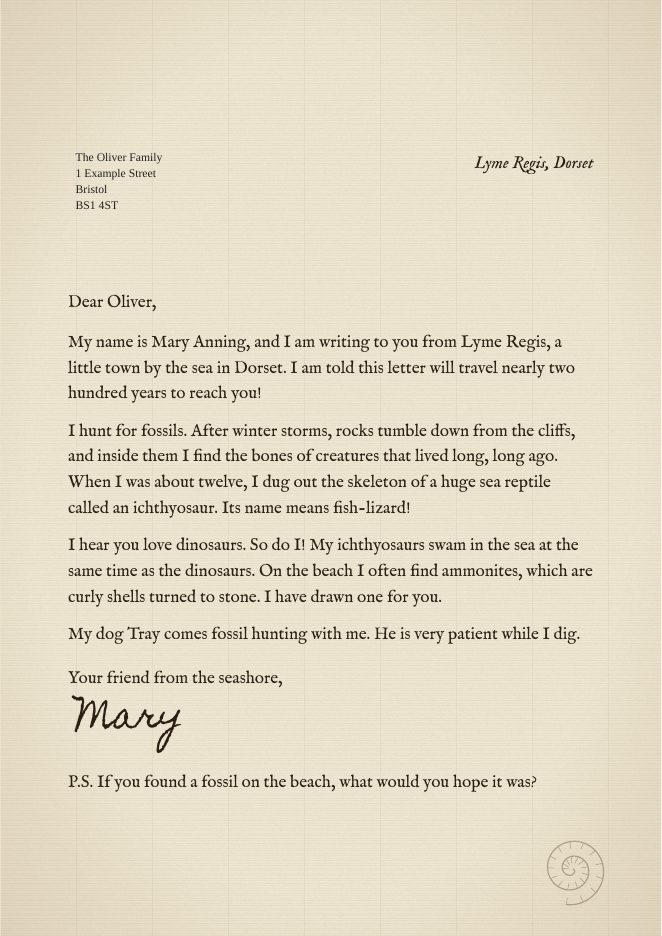
The idea
Children aged 5 to 12 get beautifully printed letters through the letterbox from figures like Mary Anning, Isambard Kingdom Brunel and Ada Lovelace. Each letter is written for that child. When the child writes back, the pen pal answers their actual questions.
children home educated in England (autumn 2025, DfE), up from 111,700 a year earlier: our first audience
a month for Story Letters (1 letter) or Pen Pal from History (2 letters, one answering the child)
estimated gross margin after printing, postage, AI and card fees
AI agents write, fact-check and lay out every letter. Stannp prints and posts them through Royal Mail, and Stripe takes payments. The team's daily job is reviewing: approving letters and handling any child's letter that needs a person. That takes minutes a day, not hours.
For families
Parent adds their child: first name, age, what they love, anything to avoid, and the address. They choose a plan and pay securely with Stripe.
The first pen pal introduces themselves. Parents can choose to preview every letter before it's posted.
The parent snaps a photo of the reply. The next letter answers it. Every few months, a new pen pal takes over.
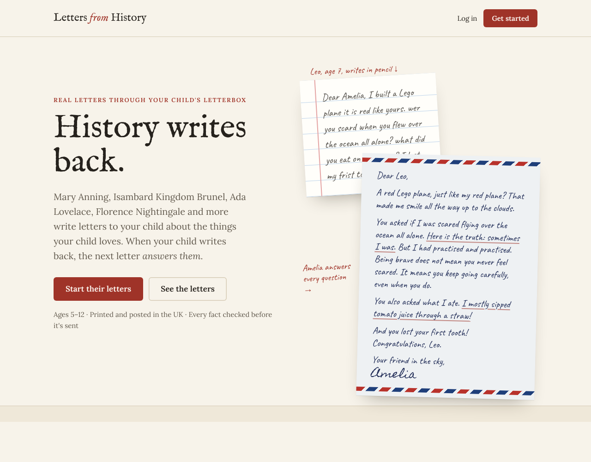
The home page. The hero shows the core promise: Leo's own letter, and Amelia Earhart's answer to every question in it.
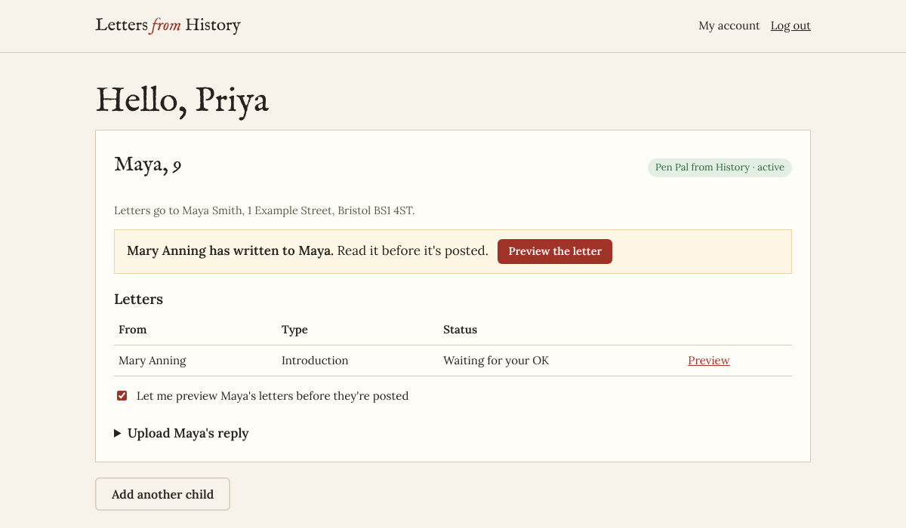
The parent's account: letters, preview, reply upload, billing and their data.
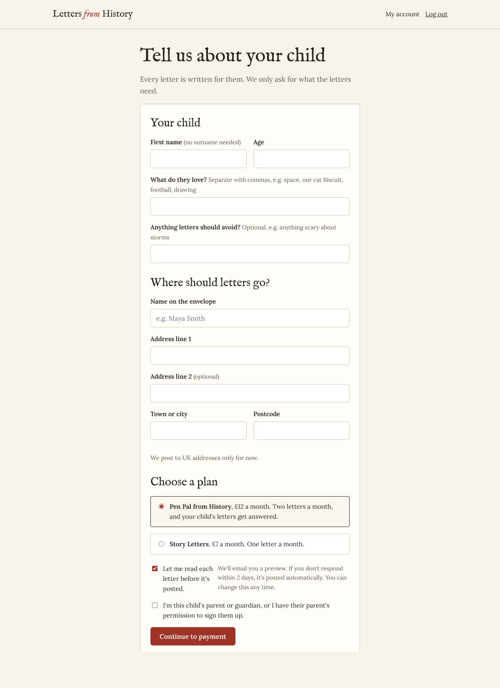
Adding a child: only what the letters need, nothing more.
The product
Each pen pal writes on paper from their own time, and every letter is written for one child. These are real sample letters, rendered exactly as they print on A4. The address shows through the envelope window.
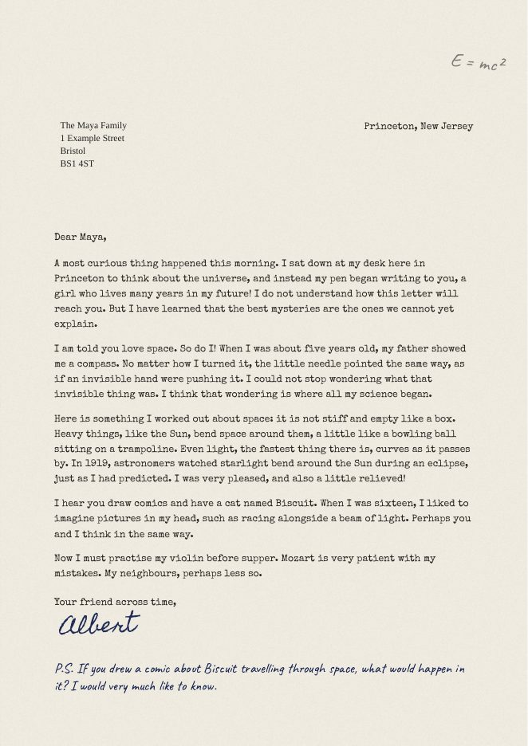
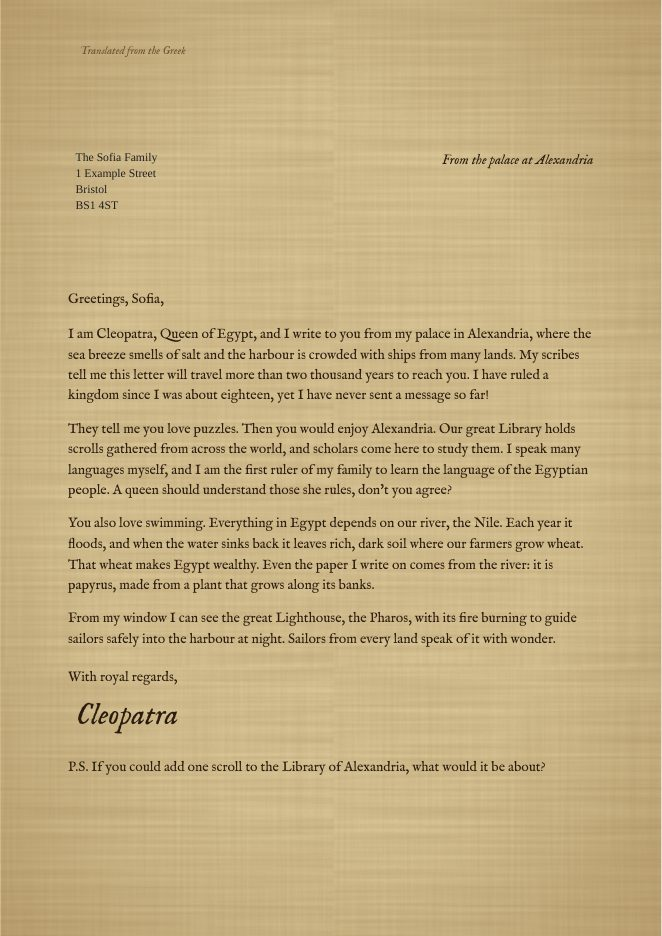
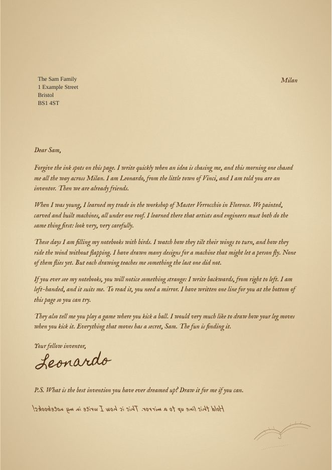
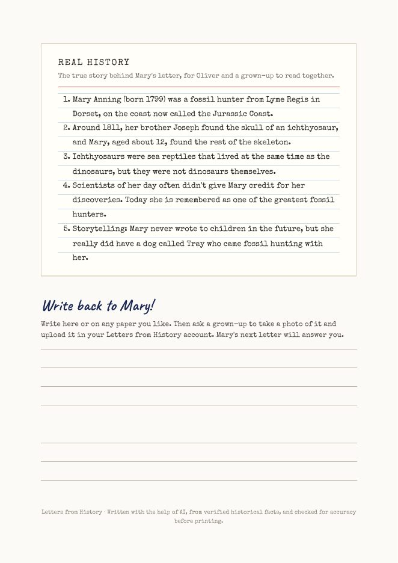
The product
Nineteen pen pals at launch, led by figures UK children meet in the history curriculum. Each has a verified fact sheet: the only facts a letter may use, plus "handle with care" rules. Two are for ages 8 and over, and younger children skip them automatically.
| # | Pen pal | Writes from | Children discover |
|---|---|---|---|
| 1 | Mary Anning | Lyme Regis, 1820s-30s | Fossils, ichthyosaurs, the Jurassic Coast |
| 2 | Isambard Kingdom Brunel | Westminster, 1840s-50s | Railways, bridges, iron steamships |
| 3 | Ada Lovelace | London, 1840s | Machines, maths, the first computer program |
| 4 | Florence Nightingale | London, 1857-65 | Nursing, hygiene, statistics |
| 5 | Charles Darwin | Down House, Kent | HMS Beagle, Galápagos, observation |
| 6 | Mary Seacole | London, 1857-60 | Jamaica, travel, healing, courage |
| 7 | William Shakespeare | Bankside, 1599-1608 | The Globe, plays, words we still use |
| 8-15 | Grace Darling · Neil Armstrong · Elizabeth I · George Stephenson · Isaac Newton · Al-Khwarizmi · Walter Tull (8+) · Emmeline Pankhurst (8+) | 1580s-1970 | Lighthouses, the Moon, Tudors, railways, gravity, algebra, football, votes for women |
| 16-19 | Einstein · Amelia Earhart · Leonardo da Vinci · Cleopatra | Their own eras | Space, flight, inventions, ancient Egypt |
Behind the scenes
AI agentSafety checkA personService
Each AI step has one job, and the fact-checker is separate from the writer, so mistakes get caught rather than repeated. Every letter's fact-check record is saved, which lets us back up the claim that "every fact is checked".
The child's first name, age, interests and the words of their reply. It never sees surnames, addresses, emails or the parent's details.
Which pen pal a child has, and whether the next letter is an introduction, story or farewell, is worked out from the letters already sent. Rejected letters never throw the rotation off.
Once a day a scheduler triggers the run: read new replies, write the letters that payments allow, and queue them for review. Letters a parent hasn't responded to within 48 hours are posted.
Safeguarding
Children will sometimes tell a pen pal things they haven't told anyone. We designed for that from the start, and we treat it as the most important part of the product.
| Layer | What it does |
|---|---|
| Parents only | Children have no accounts and no contact with anyone. Only a parent or guardian can sign up and upload replies. |
| AI safeguarding assessment | Every reply is graded none, low, high or urgent. It also flags inappropriate content, attempts to instruct the AI, and letters that don't look like a child wrote them. |
| Word screen (no AI) | Words about being hurt, self-harm, secrets, fear of an adult, running away, neglect or bullying force a hold even if the AI says the letter is fine. Tested against exactly that case. |
| Personal details removed | Addresses, phone numbers, emails, postcodes and social media handles are stripped out before anything is stored or written. |
| Hold, don't reply | A held reply gets no automatic answer. The safeguarding lead is emailed immediately, with URGENT in the subject when needed, and the photo is kept until a person has reviewed it. |
| Safe outgoing letters | Letters never ask for personal details, never repeat them, never promise meetings, calls or gifts, and never suggest secrets from parents. Low-level sadness (e.g. a pet died) gets a brief, kind acknowledgement and a nudge to talk to a trusted grown-up. |
| People | We approve every letter at launch. A named Designated Safeguarding Lead follows a written policy that sets out when to call 999, contact the council's children's services, or get advice from the NSPCC (0808 800 5000). |
The automatic checks help a person notice. They never replace a person's judgement. False alarms are expected and fine. Full policy: docs/safeguarding.md.
Parent preview
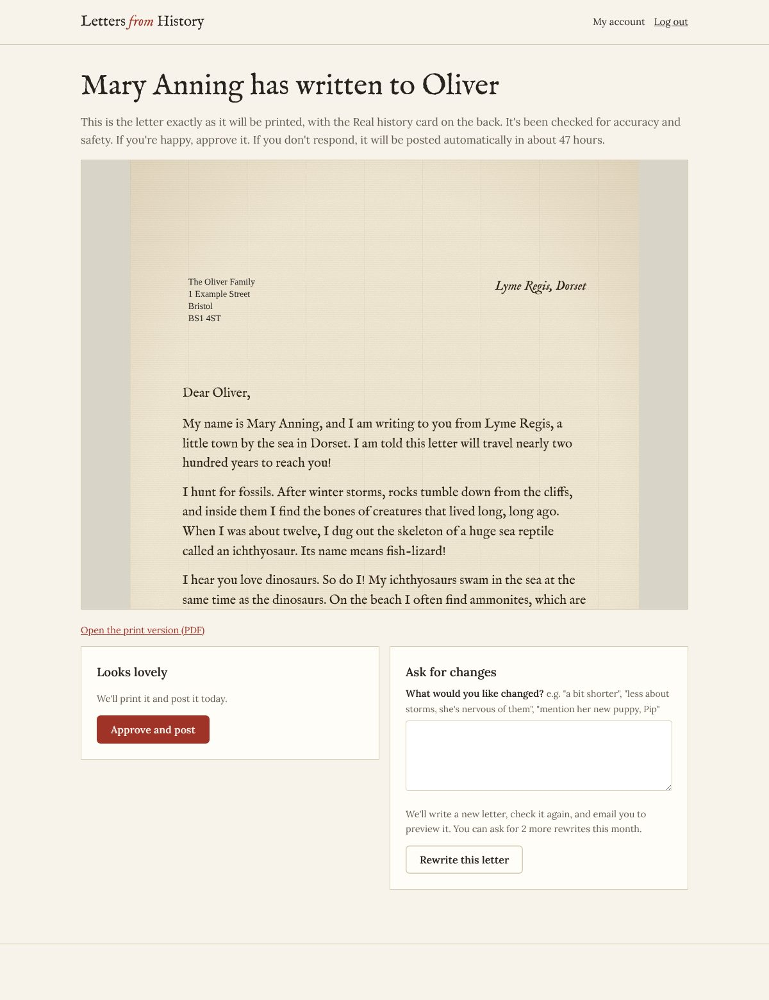
The preview shows the letter exactly as it will print.
Preview is a per-child setting, on by default at sign-up and changeable any time.
Operations
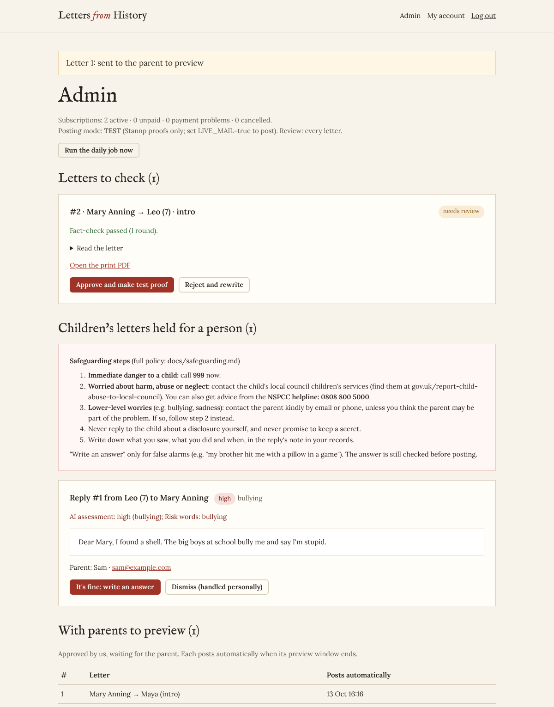
The admin page: letters to check, children's letters held for a person (with the safeguarding steps right there), letters waiting on parents, and recent posting with costs.
| LIVE_MAIL | Off = Stannp test proofs only. On = really printed and posted. |
| REVIEW_ALL | On = we approve every letter. Later, off = only flagged letters wait for us. |
Business
All figures are estimates from current UK prices. They'll be replaced with real data from our first months.
| Per subscriber per month | Story Letters (£7) | Pen Pal from History (£12) |
|---|---|---|
| Print, envelope and 2nd class postage (Stannp, ~£0.88 a letter) | £0.88 | £1.76 |
| AI: writing, fact-checking, reading replies | ~£0.15 | ~£0.30 |
| Card payments (Stripe UK) | ~£0.31 | ~£0.38 |
| Gross margin | ~£5.66 (81%) | ~£9.56 (80%) |
subscribers ≈ £3,000/month revenue (at a £10 average)
subscribers ≈ £10,000/month: our year-one stretch goal
turnover before VAT registration applies (then 20% of the price goes to VAT)
Where we are
| done | Parent accounts, child profiles, reply uploads, data export and deletion |
| done | Stripe subscriptions (£7/£12), billing portal, payment webhooks |
| done | AI writer, fact-checker and reply reader; 19 pen pals; era stationery |
| done | Layered safeguarding and safeguarding policy |
| done | Admin review, parent preview, cost limits |
| done | Stannp UK print-and-post integration (test proofs by default) |
| done | Privacy policy and terms (Forem Innovations), launch guide |
| done | Email verification, Sign in with Google, rate limits, security headers, migrations, 12-month data retention |
| done | Safeguarding records, pausing a child, lost-letter resends, connection check |
| done | 67 automated tests covering accounts, billing, letters, safety, preview and release features |
Tech: Python (FastAPI), Postgres (Supabase, London) or SQLite, Claude by Anthropic, Stripe, Stannp, Chromium for print PDFs, Docker.
| to do | Run end to end with live keys in test mode, and check Stannp proofs (address window) |
| to do | Hosting (UK/EU), Postgres, daily scheduler, email provider |
| to do | Company details, ICO registration, data processing terms with suppliers |
| to do | Solicitor review of privacy policy and terms |
| to do | Name a Safeguarding Lead and deputy; training and DBS checks |
| to do | Letter-quality test run (about 30 letters) and teacher review of the 19 fact sheets |